Upload and Manage ACH Files
Learn how to upload, review, and manage your business payment files through Online Banking. This guide provides step-by-step instructions for submitting transfers and cancelling scheduled payments when necessary.
1
Click "Business Banking"
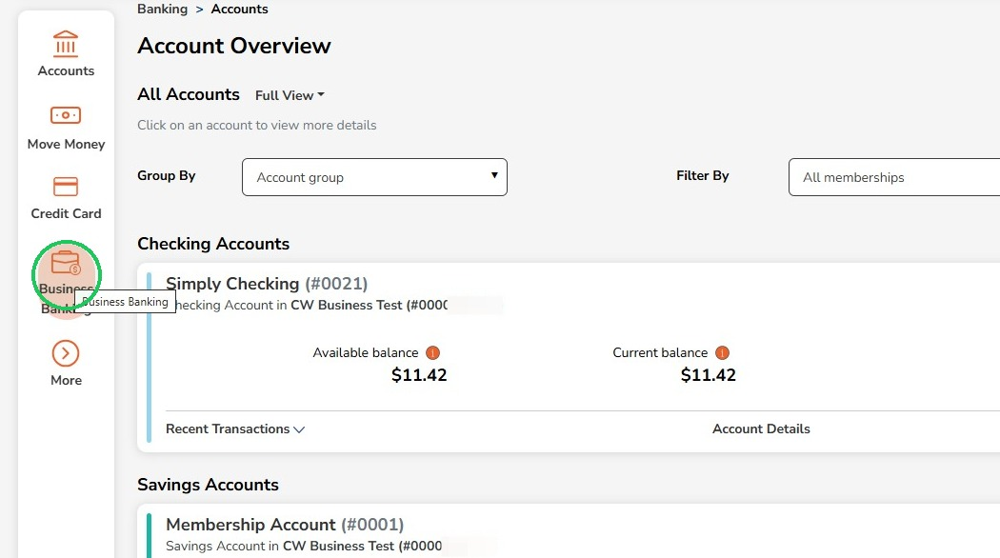
2
Click "Payment From File"
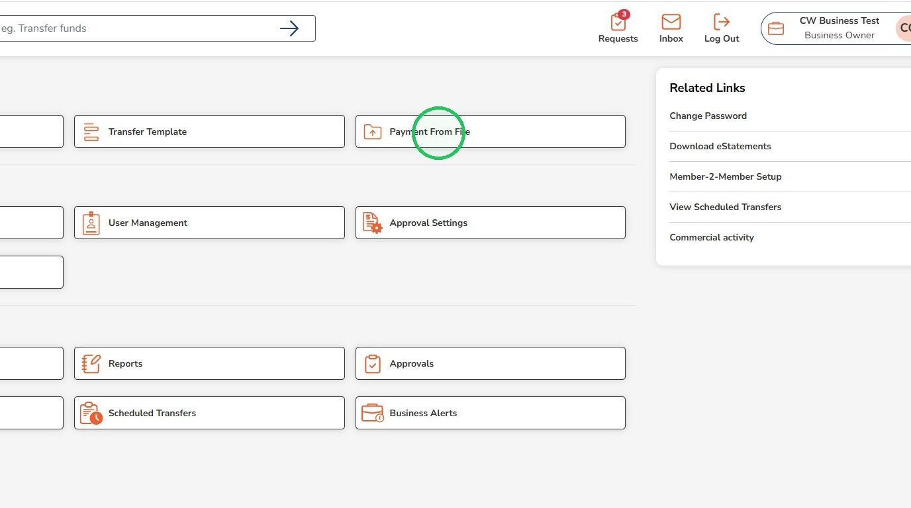
3
Click "Select file"
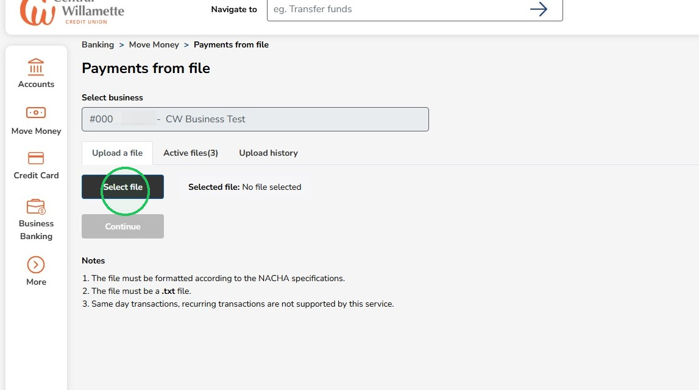
Double check that the ACH file being uploaded is a .txt file and is formatted according to NACHA specifications
4
Click "Continue" to validate the selected file
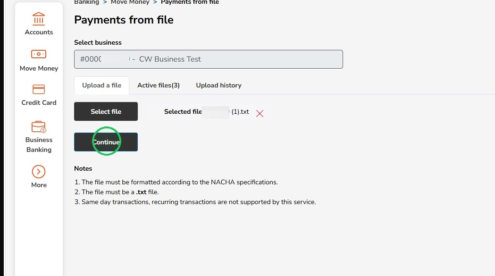
5
A green bar will appear to indicate the file is being validated
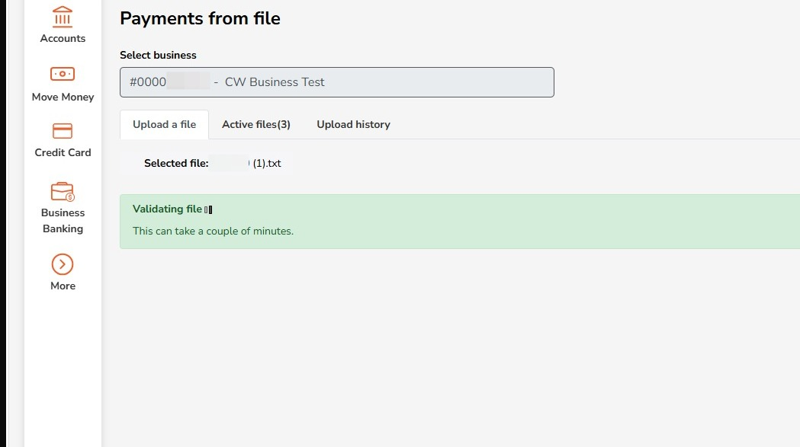
6
Select a source account to fund the transfer batch
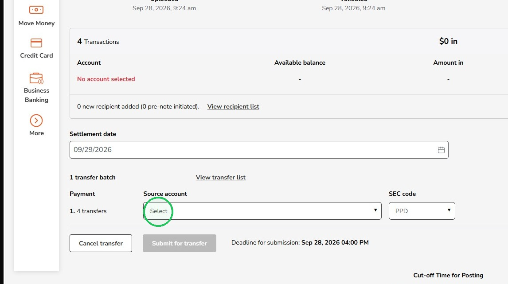
7
Select the appropriate SEC code
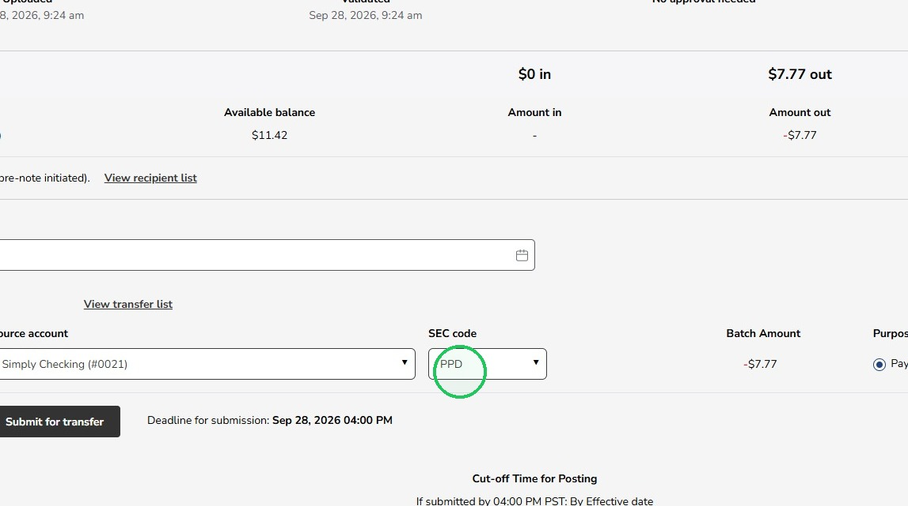
Select PPD when the recipient is an individual and the payment is being sent to their personal checking or savings account.
Select CCD when the recipient is a business, company, or other organization and the payment is being sent to its business bank account.
Select CCD when the recipient is a business, company, or other organization and the payment is being sent to its business bank account.
8
Clicking "View recipient list" or "View transfer list" will display the transfers, recipients, and amounts in the batch at the bottom of the page
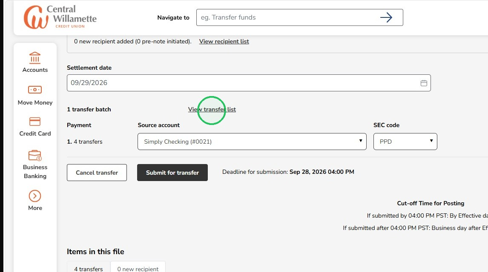
9
Click "Submit for transfer" when finished reviewing
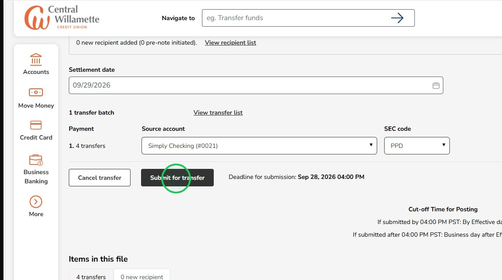
Transfers submitted before 4:00 PM PST will be processed and available the following business day. Transfers submitted after 4:00 PM PST will be available within two business days.
10
Complete the One-Time Passcode
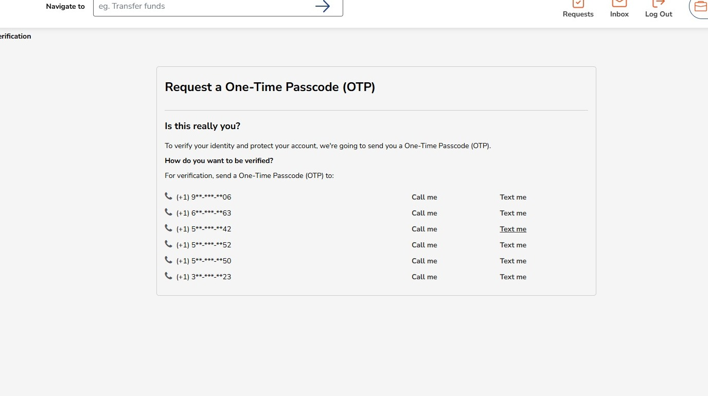
11
A green confirmation message will appear at the top
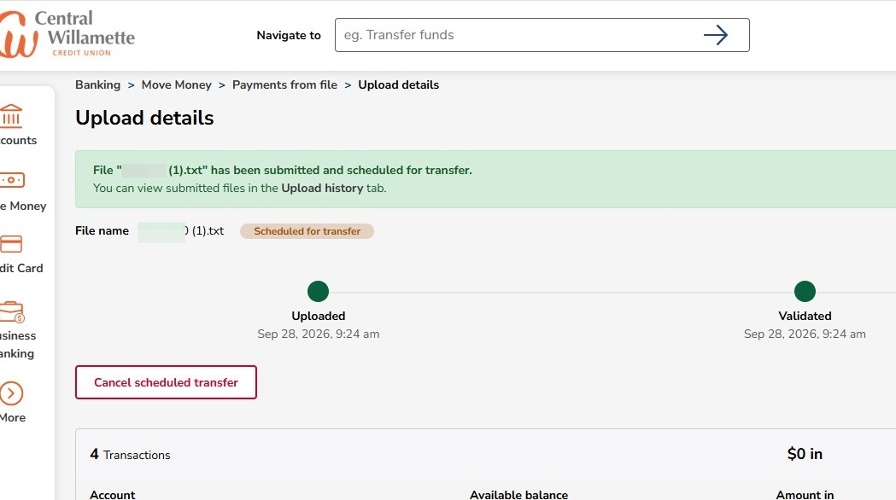
12
You can view upload history and cancel scheduled transfers by going to the "Payment by File" page and clicking the "Upload history" tab
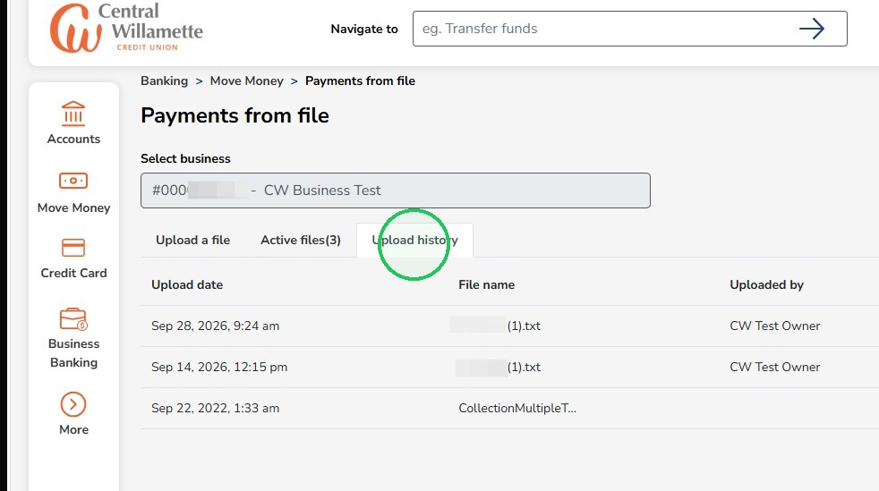
13
Click "View details" for the scheduled file to cancel the transfer or view the file details
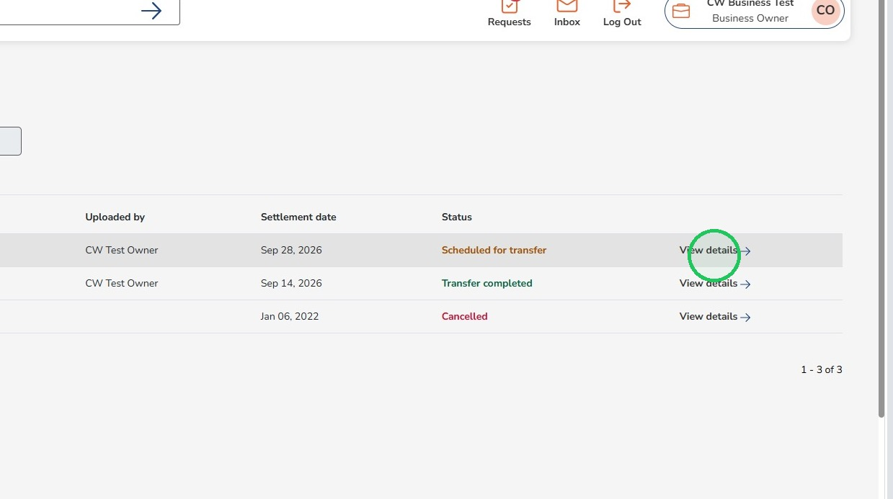
14
Click "Cancel scheduled transfer" to cancel the transfer before it processes
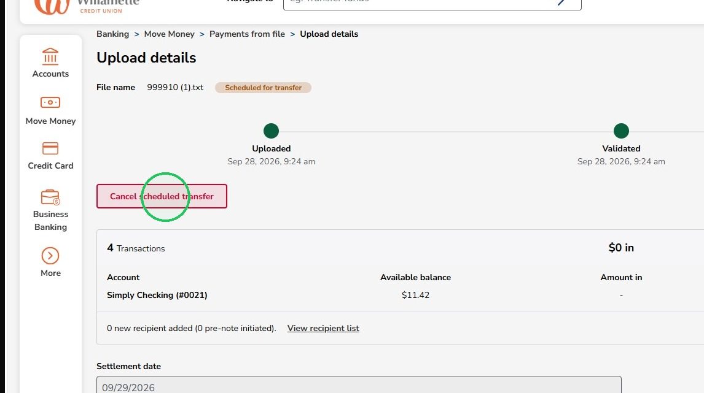
15
Click on "Active files" to see files that may be awaiting approval if they were submitted by a user role that requires additional approval
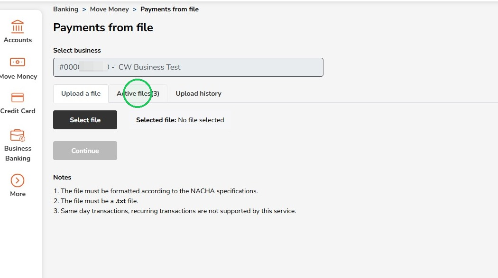
16
Click "View details" to review the pending file
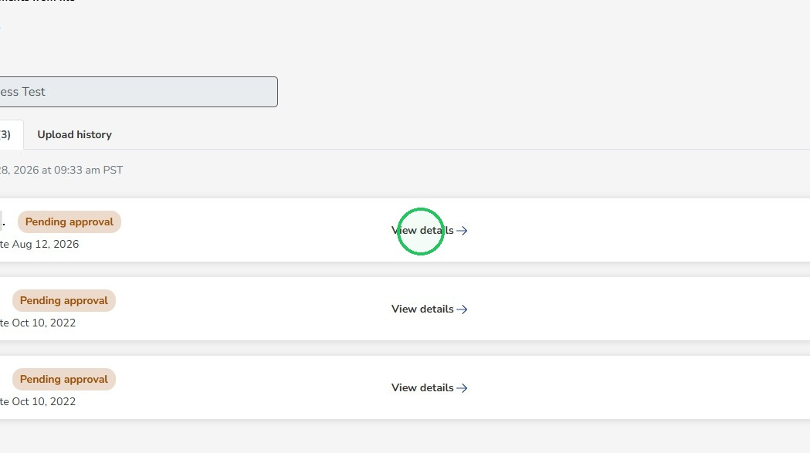